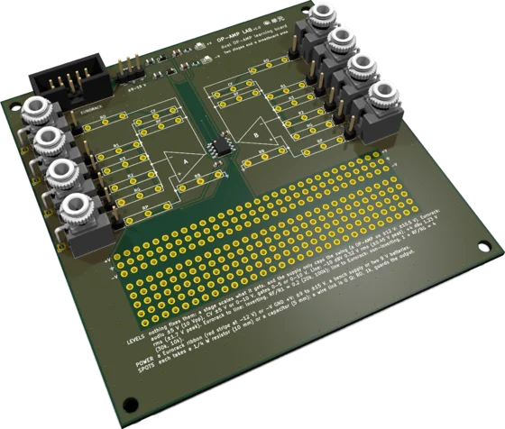
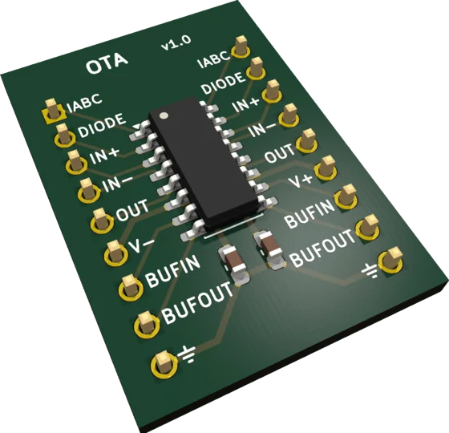
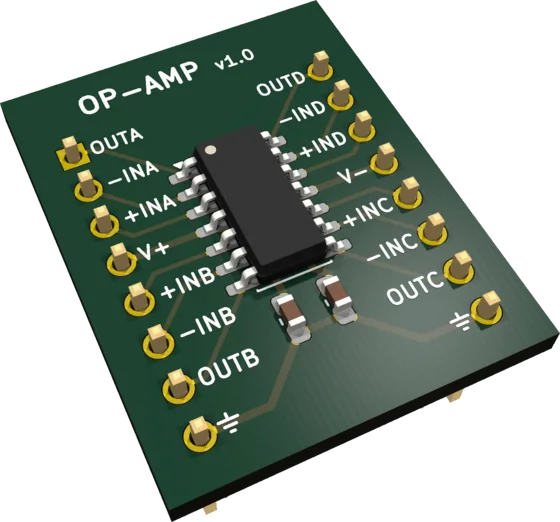
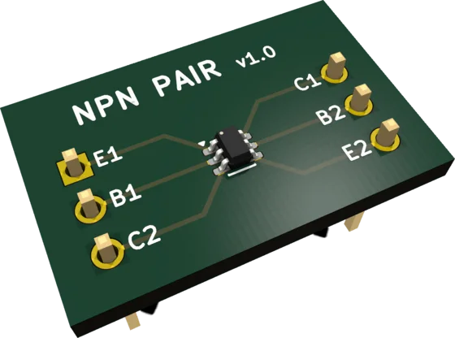
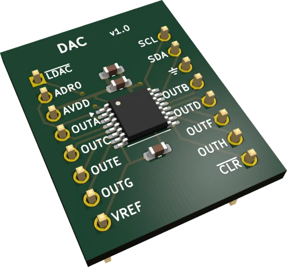
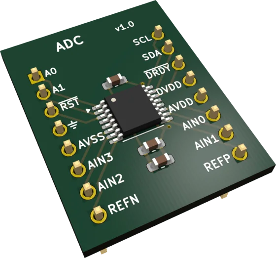
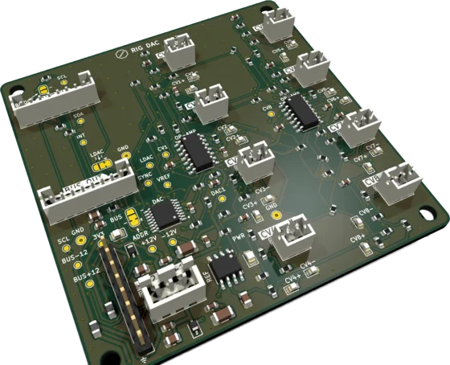
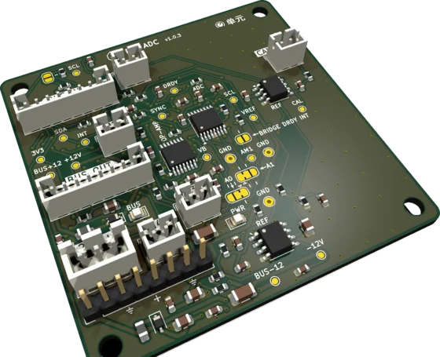
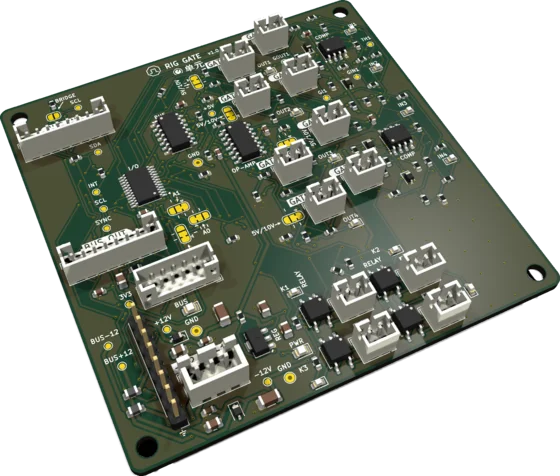

OP-AMP
Two op-amp stages you finish yourself with resistors, capacitors and wires: a follower, an amplifier, a mixer, an offset or a filter.
Being madeBoards that help build the rest: an op-amp board to try circuits on, small breakouts that put a chip on a breadboard, and a test rig of I2C boards that will drive and measure the modules on the bench.

Two op-amp stages you finish yourself with resistors, capacitors and wires: a follower, an amplifier, a mixer, an offset or a filter.
Being made
A 100 × 100 mm board for learning op-amps: two stages drawn as their schematic, with jacks, header pins and a small breadboard area.
Drawn and checked; held back from the first order
A dual OTA on a 0.6 in wide header in its own pin order, to try OTA circuits on a breadboard.
In the first test order, being placed
A quad op-amp with rail-to-rail output on a 0.6 in wide header, running straight from ±12 V.
Drawn and checked; not ordered yet
Two matched NPN transistors on one die, on a six-pin header for the breadboard: the pair an exponential converter needs.
In the first test order, being placed
Eight 12-bit voltage outputs over I2C on a 0.6 in wide header, to try the DAC on a breadboard before building it into a board.
In the first test order, being placed
A four-input 24-bit ADC with I2C, a programmable gain amplifier and an internal reference, on a 0.6 in wide header.
In the first test order, being placed
Eight calibrated, settled CV outputs from −5 to +10 V for the test rig, set over I2C from a Pico 2.
Drawn and checked; held back from the first order
The test rig's voltmeter: four 24-bit CV inputs at 1 MΩ, with ground sense and a 5.000 V reference to calibrate against.
Drawn and checked; held back from the first order
Four gate outputs, four gate inputs and four isolated contacts for the test rig, on an I2C port expander.
Drawn and checked; held back from the first orderThe OTA, matched NPN pair, DAC and ADC breakouts come on one small panel, so they order as one design and travel as one sheet. The boards are held together by narrow tabs with rows of mouse bites, so each one snaps out clean of its neighbour; file the stubs flush. The quad op-amp breakout isn't on it and would be ordered on its own.